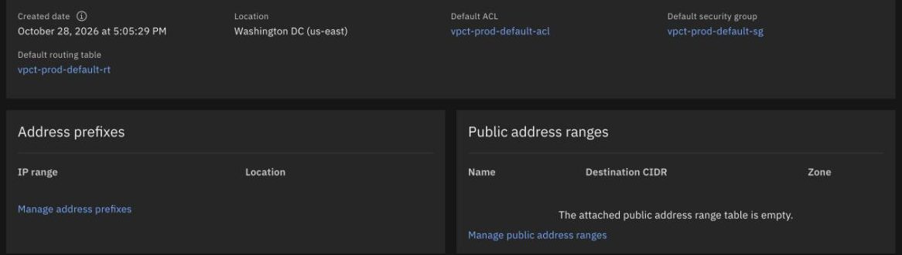

Address prefixes and subnets
By the end you can read the address prefixes and subnets of a VPC, say how many addresses a subnet gives you, and say what you create first.
Northgate Freight is moving off vSphere. The company is made up; the output in this unit is real. Its first job is to lay out the address space, before any server exists.
Every statement and output in this unit comes from tutorial chapters 20 and 21. The review question comes from chapter 13. The vSphere comparison is a rough mapping from chapter 02. Some columns and blank lines are left out of the output, and IDs are shortened.
One VPC, three zones, nine subnets
Select a part of the drawing to see what it does and which lines of real output show it. You can also click a line.
Address prefix
An address range that a VPC owns in one zone. Subnets in that zone are created inside it. The plan in chapter 21 gives each VPC one /16, each zone one /18 and each subnet a /24.
Watch for this. This VPC was made with manual prefix management, so it had no prefixes at all until you created them. A prefix takes no resource group option: it belongs to the VPC.
Subnet
A range of addresses in a VPC, bound to one zone. Servers take their addresses from it. Each of the nine subnets sits inside the prefix of its own zone.
From vSphere: a subnet is roughly a port group or VLAN. Unlike one, it lives in a single zone.
Watch for this. Name the resource group when you create a subnet. Without it the subnet goes to the targeted group or the Default group.
Address count
IBM reserves five addresses in every subnet: the first four and the last. A /24 has 256 addresses, and 251 are left for your resources. The output reads Address available 251 and Address total 256.
Defaults
Each new subnet takes the VPC’s default network ACL and default route table, named vpct-prod-default-acl and vpct-prod-default-rt here. Unit 2.2 gives subnets their own ACLs.
$ ibmcloud is vpc-address-prefixes vpct-prod
Listing address prefixes of vpc vpct-prod under account <redacted> as user <redacted>...
ID Name CIDR block Zone Has subnets Is default Created
r014-…-3f23 vpct-prod-prefix-z1 10.20.0.0/18 us-east-1 false false 2026-10-29T15:39:08+00:00
r014-…-0500 vpct-prod-prefix-z2 10.20.64.0/18 us-east-2 false false 2026-10-29T15:39:10+00:00
r014-…-f284 vpct-prod-prefix-z3 10.20.128.0/18 us-east-3 false false 2026-10-29T15:39:12+00:00
$ ibmcloud is subnet-create vpct-prod-web-z1 vpct-prod --ipv4-cidr-block 10.20.0.0/24 --resource-group-name vpct-lab
Creating subnet vpct-prod-web-z1 in resource group vpct-lab under account <redacted> as user <redacted>...
Name vpct-prod-web-z1
Status pending
IPv4 CIDR 10.20.0.0/24
Address available 251
Address total 256
Zone us-east-1
ACL ID Name
r014-…-3e06 vpct-prod-default-acl
Routing table ID Name
r014-…-80f0 vpct-prod-default-rt
Public Gateway -
$ ibmcloud is subnets --vpc vpct-prod --output json | jq -r '.[] | [.name, .zone.name, .ipv4_cidr_block, .available_ipv4_address_count, .resource_group.name, .network_acl.name] | @tsv' | sort
vpct-prod-app-z1 us-east-1 10.20.1.0/24 251 vpct-lab vpct-prod-default-acl
vpct-prod-app-z2 us-east-2 10.20.65.0/24 251 vpct-lab vpct-prod-default-acl
vpct-prod-app-z3 us-east-3 10.20.129.0/24 251 vpct-lab vpct-prod-default-acl
vpct-prod-mgmt-z1 us-east-1 10.20.2.0/24 251 vpct-lab vpct-prod-default-acl
vpct-prod-mgmt-z2 us-east-2 10.20.66.0/24 251 vpct-lab vpct-prod-default-acl
vpct-prod-mgmt-z3 us-east-3 10.20.130.0/24 251 vpct-lab vpct-prod-default-acl
vpct-prod-web-z1 us-east-1 10.20.0.0/24 251 vpct-lab vpct-prod-default-acl
vpct-prod-web-z2 us-east-2 10.20.64.0/24 251 vpct-lab vpct-prod-default-acl
vpct-prod-web-z3 us-east-3 10.20.128.0/24 251 vpct-lab vpct-prod-default-acl
Pick an answer, then see what was recorded
A subnet is a /24. The output says Address total 256. How many addresses can your servers use?
Show the answer
Five are IBM’s.The same output reads Address available 251. IBM reserves the first four addresses and the last one in every subnet.
The block 10.20.65.0/24 sits inside the zone 2 prefix, 10.20.64.0/18. Someone creates the subnet and names the zone us-east-1. What happens?
Show the answer
The zone must be the zone of the prefix that holds the block. A different zone is refused with address prefix not associated with provided zone. The chapter leaves the zone out, because the block’s prefix already sets it.
The VPC overview page
This is a real screen of the VPC, cut off below the name and ID. Click where you would click. After two misses the right place is marked.

This VPC has manual prefix management, so no zone has a range yet. Where do you go to add one?
Show where
Right. The Address prefixes panel has column headers and a Manage address prefixes link, and no rows.
A new subnet takes a network ACL until you give it its own. Which link names it?
Show where
Right. Default ACL, vpct-prod-default-acl. Chapter 21’s subnets all show it until chapter 22 attaches their own.
Which value tells you the region the VPC is in?
Show where
Right. Location reads Washington DC (us-east). A VPC is in one region, and its subnets are in zones.
Choose how to give the ranges
Choose one, then open the worked answer. The answers come from chapters 20 and 21.
Need A. Northgate has an address plan. Each subnet must take the range the plan gives it. Which way of creating a subnet?
Show the worked answer
Name the block with --ipv4-cidr-block. It fits when you follow an address plan. The block must sit inside an address prefix of the zone.
Need B. A throwaway test needs a subnet. The range does not matter. Which way?
Show the worked answer
--zone with --ipv4-address-count lets IBM choose the range. It works with default prefixes. The cost: the range is not under your control.
Need C. The VPC will later be joined to other VPCs by a Transit Gateway. Which prefix management?
Show the worked answer
Manual. IBM’s addressing guide says to avoid default address prefixes for VPCs you will interconnect, and to create non-overlapping prefixes instead. With auto IBM creates a default prefix in each zone. With manual it creates none, and you add them yourself.
Three questions
Review question from Unit 1.1. How many regions can one VPC be deployed in?
Show the answer
A VPC is deployed in one region, and it can span all the zones of that region. Its subnets are zonal.
A VPC with manual prefix management is new and empty. What do you create first?
Show the answer
The prefixes. A subnet’s block must sit inside an address prefix of its zone, and this VPC has no prefixes until you create them.
Can one subnet span two zones?
Show the answer
A subnet cannot span zones or regions. Every subnet in a VPC can still reach every other subnet through the implicit router, across zones.
You can read a VPC’s address plan
A prefix per zone, then subnets inside it. A /24 gives 251 addresses. A subnet lives in one zone. Manual prefixes for VPCs you will join.
Tutorial chapter 21, Creating address prefixes and subnets in an IBM Cloud VPC, runs everything you just saw.